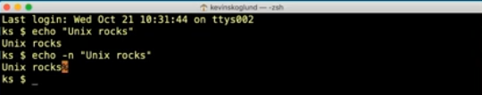

The Command structure
command options arguments
the command is the program, the options are optionals, and the argument is what is passed into the command
Example
echo 'Hello World'
echo is the program or function while "Hello World" is the argument being passed into the command
options
echo -n 'Hello World'
would suppress the new line return
make -v
returns the version of the program/command
as does
make --version
--version does the same thing as -v
options are a single dash - followed by a letter or a double dash -- followed by a keyword
Another Example
ls -l -a -h /usr
the ls is the list directory program and it's options are:
- -l
- A total sum for all the file sizes is output on a line before the long listing.
- -a
- includes directory entries whose name begins with a dot (.)
- -h
- When used with the -l option, use unit suffixes: Byte, Kilobyte, Megabyte, Gigabyte, Terabyte and Petabyte in order to reduce the number of digits to three or less using base 2 for sizes.
the /usr is the arguement which is a directory
ls -lah /usr
you can combine options and the order does not matter
options
sometimes, options have their own arguments
banner -w 50 'hello world'
The -w sets the width of the banner and 50 is how wide the banner will be
it can also be written as
banner -w50 'hello world'
example
cat -n file1.txt file2.txt
cat will concatanate two files together and the -n option in this case will number the lines in the output